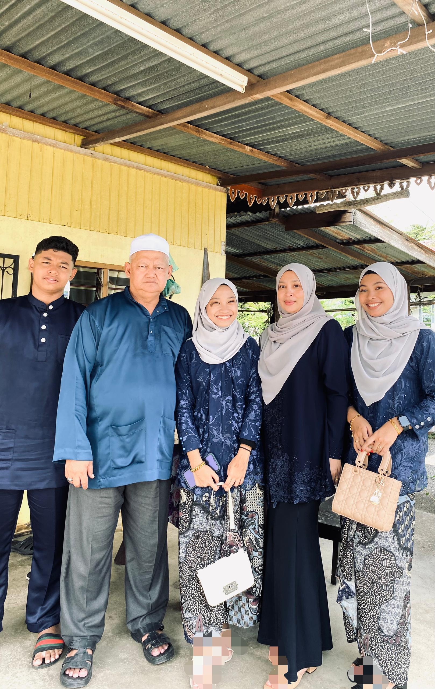
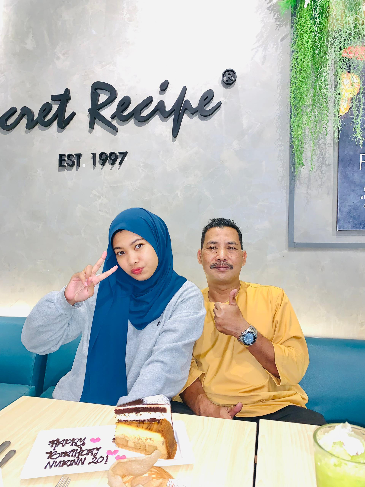
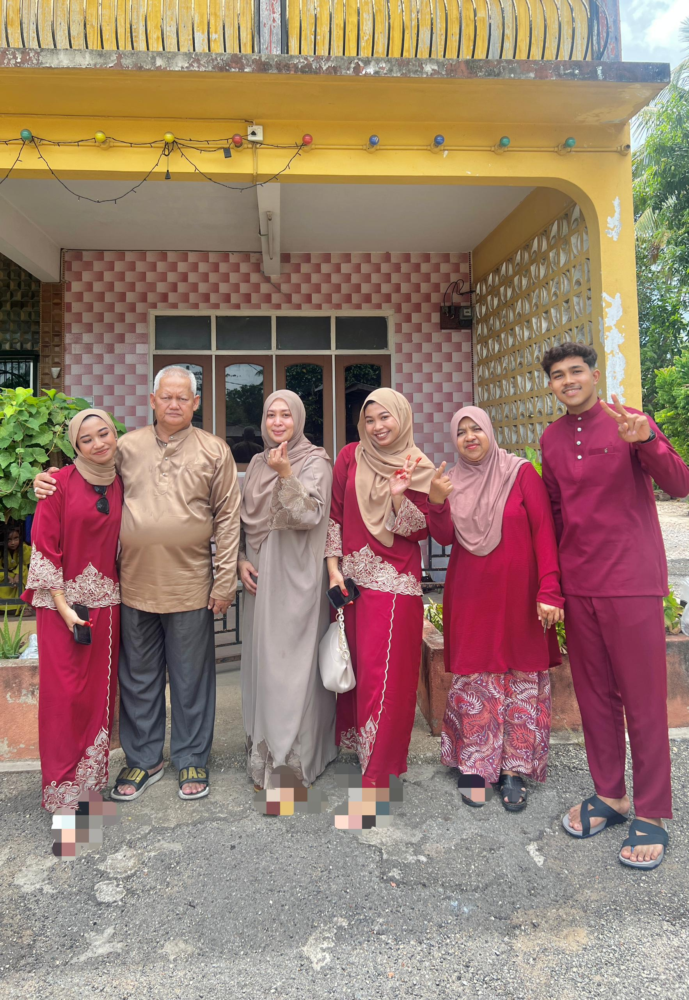
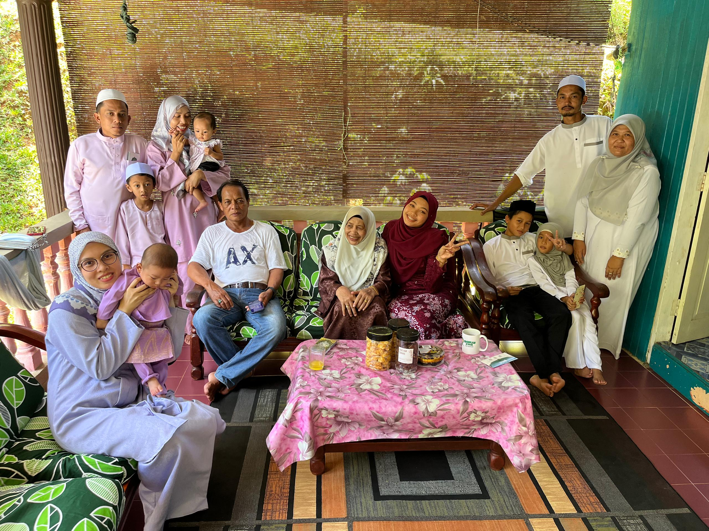
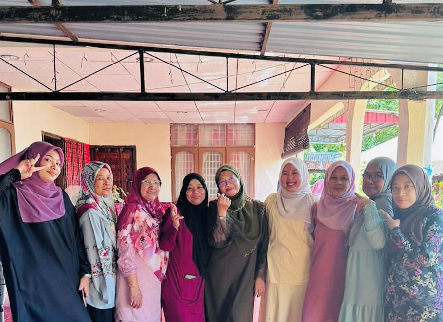
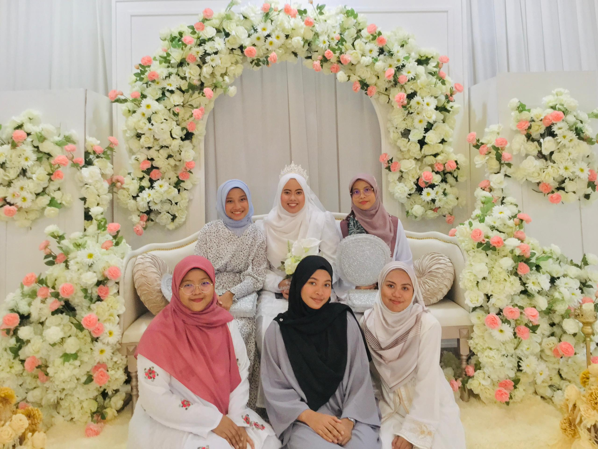

"The Heart of Home: My Family Journey"
Family means you are a part of something wonderful. It means you will love and be loved for the rest of your life.
Growing up, my family was a little different but in the best way possible.
My parents got divorced when I was younger, and though it was hard at first, it led to something wonderful: a bigger, more exciting family.
Let me show you about my family !!!
1) Yatie's Family Photo

This is my new family, called "Yatie's family".
"Yatie" combines the names of my step-father, Yazid, and my mother, Shahdiati.
from left: Zabir (biological little brother), Yazid (step-father),
Aleesya (little step-sister), Shahdiati (biological mother) , Nurin (me).
2) My Father's Photo

This is my Superhero which is my biological father.
His name is Zainizam. This picture during celebrated my birthday
at Secret Recipe, Jitra.
3) Seri's Family Photo

This is my adoptive family, called "Seri's family".
This family created on 2023, during celebrated on Eid al-Fitr,
was celebrated on Friday, April 21, 2023.
from left: Aleesya (little step-sister), Yazid (step-father),
Shahdiati (biological mother) , Nurin (me) , Seri (Akmal's mother), Akmal (My bestfriend).
4) Terengganu's Family Photo

This picture is a member of my biological mother's family who is in Terengganu.
Actually this family has 9 families but only 3 are there because the others
celebrate the Eid al-Fitr in their own village.
5) Kedah's Family Photo

This picture is a member of my biological father's family who is in Kedah.
This picture was taken during a thanksgiving ceremony.
6) Johor's Family Photo

This picture is a member of my step-father's family who is in Johor.
This picture was taken during a cousin's wedding.